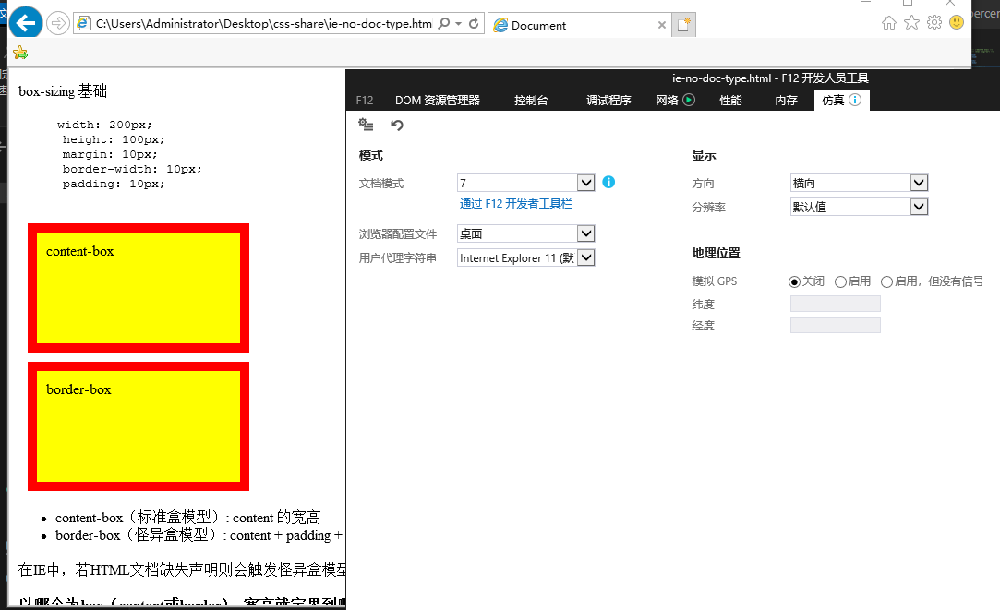

width: 200px;
height: 100px;
margin: 10px;
border-width: 10px;
padding: 10px;
在早期IE中，若HTML文档缺失 <!doctype html>声明则会触发怪异盒模型。
一个IE7的例子

.box1 { box-sizing: content-box; } /* 默认值 */
.box2 { box-sizing: padding-box; } /* Firefox 曾经支持 */
.box3 { box-sizing: border-box; } /* IE8以上全线支持 */
.box4 { box-sizing: margin-box; } /* 从未支持过 */